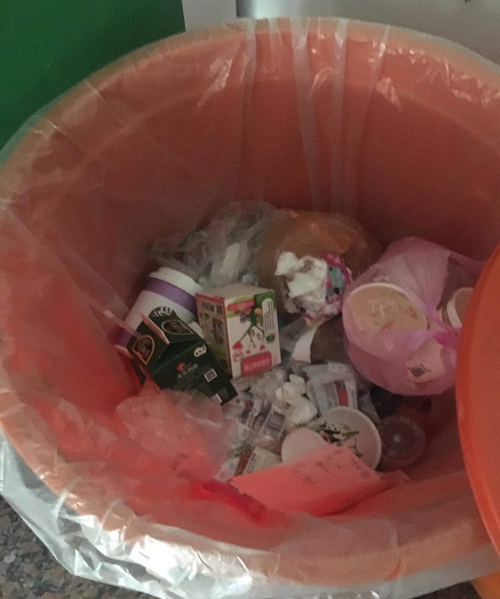
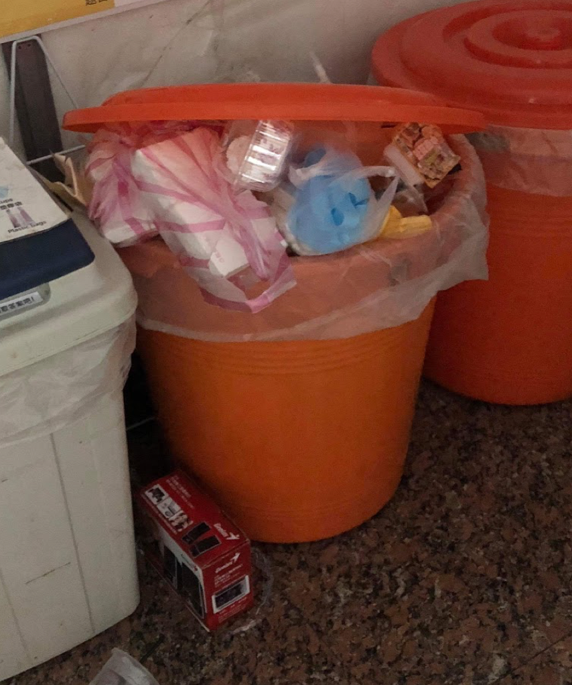
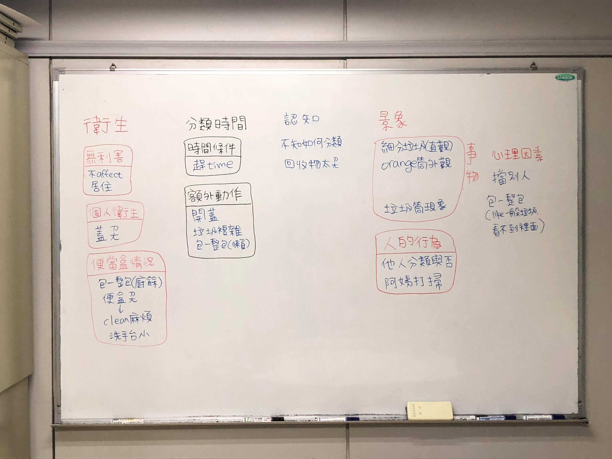
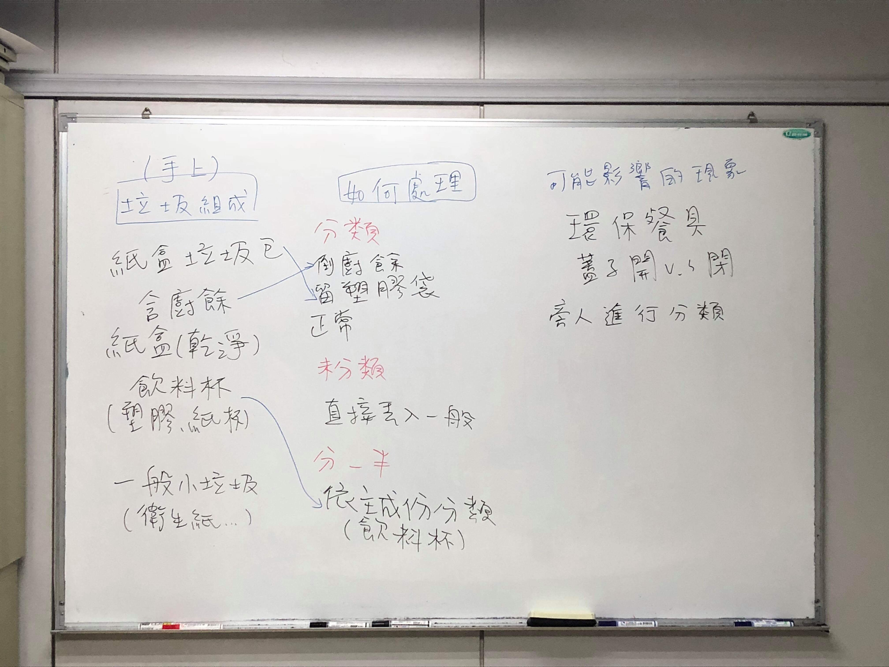
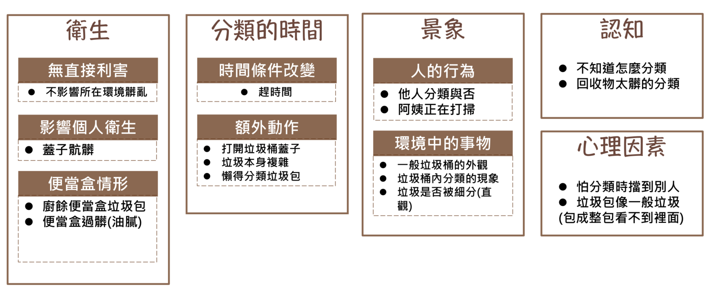
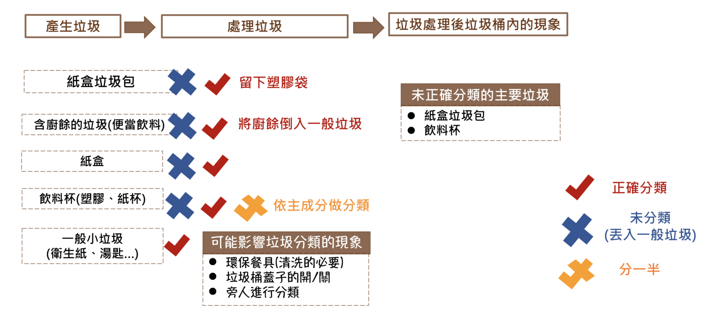
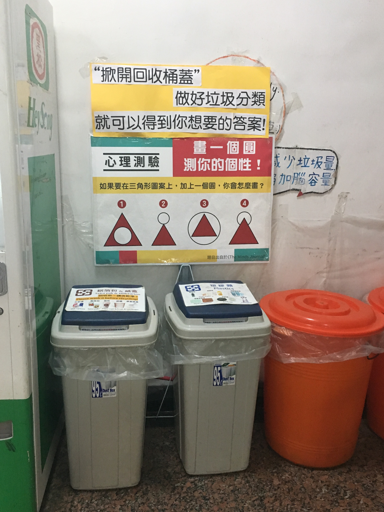
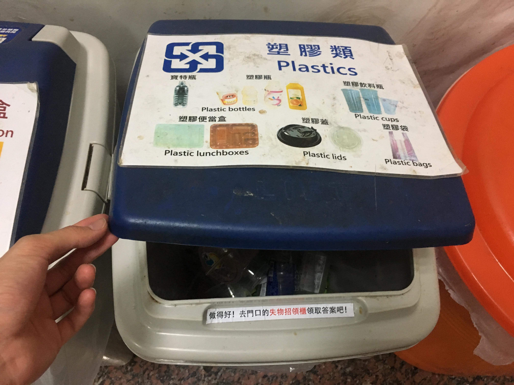

Waste Sorting on Campus
Overview
This is a 4-month project from the Design Thinking class in which students were separated into groups to solve a wicked problem about the school (National Chengchi University, NCCU) together. Our team decided to work on the waste sorting issue on campus, which has been an existing problem for a very long time but not yet been solved or improved.
In this project, we addressed the problem by conducting several researches to understand the issue and trying to solve it through our ideas and iterative design. For the final presentation, every group had to generate a final proposal for the problems they were working on and presented it to the whole class and the candidates of the new principal of the university.
Timeline
Mar - Jun 2018 (4 months)
Role
Research
Prototyping
Evaluation
Team
廖佳儀
游智凱
林貞妮
Methods & Tools
Design Thinking
Research (Observation/Interviews)
User Journey
Affinity Diagram
Prototyping
Evaluation (Observation/Interviews)
The Problem
 Under current regulations in Taiwan and the university, the wastes shoud be sorted by general waste, paper, metal, and plastic. However, as the pictures above have shown, most of the wastes go directly into the general waste bin without being sorted.
Why this is a problem?
In terms of ....
The society as a whole: the resources can not be fully utlized because those recyclable resources that were sorted as general waste would be burnt down and therefore can not be reused.
The university: Because the recyclable resoureces were sorted as general wastes, the volume of the general wastes is actually far more than it should be. As a result, the university has to pay more on processing the general wastes than it should have, and what is worse is that the university may also be fined because of this.
Define the Problem
Stakeholders
After we digged into this problem, we found out that in the whole process —— the waste being produced, the waste being put in the bins, and the waste being collected and processed —— there are four important stakeholders: the janitors, the students, the university, and the waste processing company.
Goals
To have all the wastes sorted properly, our goals is actually hoping that the resources can be recycled and reused, and the money used on the wastes can be used effectively, too (Not used to pay the fines).
For the resouces: the wastes should be properly sorted before being shipped out of the university.
For the money: reducing the expense on genreal waste processing as well as generating revenues by selling the recyclable.
Reframing the Problem
On the surface, it seems that this is just a mere recycling problem, but underneath it, the real, underlying problem is: How can the resources and money be distributed and utilized more effectively?
Research
Our team decided to tackle the problem by influencing the behavior of the stakeholder that is the major party producing and sorting the wastes, which is the sudents. Therefore, we first tried to understand their behavior by observing what kind of wastes they were trying to get rid of, how they sorted or dealt with the wastes, if other people's behavior would cause any effects, the environment of the recycling bins being put in, and what kinds of recyclable wastes were being sorted as general wastes. Besides obsevation, our team also conducted 5 interviews with the students to understand what they were thinking when sorting the wastes.
We organize our research results with affinity diagram and user journey map:
  The affinity diagram demonstrates that the major factors of waste sorting are personal or environmental hygiene, how much time waste sorting might take, other people's behavior, other things in the environment, the person's knowledge about waste sorting, and mental factors.
The user journey map shows that during the sorting process, what are the common kinds of wastes and how they were usually processed. We discovered that the major types of wastes that were not sorted properly most often were the container of bubble tea and the paper meal box.
Key Insight
Among all the factors of waste sorting, according to our research, we discovered that the need to quickly get rid of the waste is really important to our target audience, the students. As a result, we wanted to design a way that would make waste sorting more interesting, giving the students motivations to sort the waste.
Kicking Off the Design
We wanted to create an interesting incentive for the students to do the waste sorting properly, and we came up with an idea of using the curiosity about the result of short personality tests to be the incentive. Above the recycling bins, We hung a poster with a simple personality test on it as well as a sign that said, "Open the lid of the recycling bins, sort the wastes properly, and then you can get your answer!" After opening the lid of the recycling bin, the users would see a sign that said where the answers were placed (a cabinet right acrossed the hall), and they could get their answers there.
Evaluation
The Results
Over a week, a total of 19 answers were taken away, and we observed that a lot of people had noticed the poster and would even stayed a while to read the poster and the sign, but only a few would thus change their sorting behavior and get the answers.
Findings
We wondered whether it was because the personality test wasn't interesting enough so we had to try other interesting incentives, or was it because of other reasons, so we set out online questionnaire and conducted another 3 interviews to find out, and it turned out that for our target audience, the need to get rid of the waste quickly outweighed the interesting incentive.
Redefine the Problem
Since it was hard to change the students' behavior, we tried to understand this problem from a different perspective, we interviewed other stakeholders regarding this issue, the janitors and the environmental protection office of the university. We found out that there were actually a lot of details about cleaning up the recyclable wastes, so even for the students who did sort the wastes every time, it was hard for them to completely did it right. In fact, the janitors had to redo the cleaning before they packed the recyclable wastes and had them shipped away. Somtimes, the janitors couldn't finish the cleaning because they had other work to do, so some recyclable wastes would still be sorted and processed as general wastes. Furthermore, the university had paid a lot of money on processing the general waste, while a high percentage of it was recyclable wastes that could be sold in return of money.
Final Proposal
Build a waste collection lot on campus.
The wastes from all buildings are collected and sent to the collection lot periodically.
Hire professional staffs to sort and clean the wastes.
How could this proposal achieve our goals?
For the resources: the professional staffs can sort the wastes more efficiently and effectively, so all the recyclable wastes can be sorted properly before they are shipped out of the university, and thus the resources can be truly recycled and reused.
For the money: if the recyclable wastes that used to be sorted as general wastes are sorted correctly now, the university could svae money on processing them as general wastes and could even sell them to gain revenue.
Proof of Concept
Every year, the university has to process about 735,000kg of general waste, and about 40% of them are recyclable paper meal box. Currently it takes NT$3.5 to process a kilogram of general waste, and a kilogram of paper meal box can be sold at NT$1.5, so if those paper meal box are sorted correctly, it can save the university about NT$1.03 million and generate a revenue of NT$0.44 million. In total, the university can gain a benefit of NT$1.47 million.
How many professional staffs does the university have to hire?
Currently, there are 30 janitors who are responsible for cleaning, sorting, and packing the wastes, and they usually spend 1.5 hour to do it every day. We estimated that the janitors can finish all the work if they spend double time on it. Thus, to fully clean, sort, and pack all the wastes, it will take 30*(1.5+1.5) = 90 hours every day. A full-time worker works 8 hours a day, so the university need about 11 people to work full-time for waste sorting. Since if the university hires professional staffs to do the sorting, the university doesn't need that many janitors, and also because of the specializtion effect, the university only has to hire 3 professional staffs, and it takes NT$0.03 million a month to hire one. As a result, the university will have to spend 3*0.03*12 = NT$1.08 million on hiring.
What I Have Learned
It is okay to fail: To me, this is the key and most important learning of this design thinking class. Every failing prototype tells a lesson and give us an opportunity to do better.
Keep questioning the assumptions and try to understand the problem from different points of view: At first, our team kept trying solving this problem by affecting the students behavior, but after we interviewed the janitors and the university, it gave us a whole new perspective to think about this problem, and our team also found out that this problem is actually a lot more complicated than we had thought.